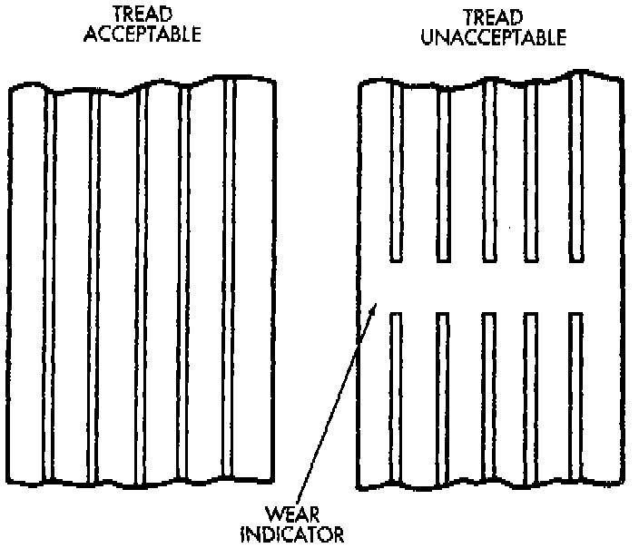
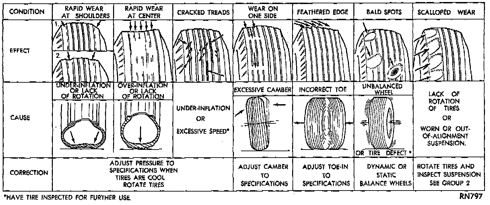

Tires: Testing and Inspection
PRESSURE GAUGESA high-quality air-pressure gauge is recommended to check tire pressure. After checking with the gauge, replace valve caps and finger tighten.

TREAD WEAR INDICATORS
Tread wear indicators are molded into the bottom of the tread grooves. When tread depth is 1.6 mm (1/16 inch), the tread wear indicators will appear as a 13 mm (1/2 inch) band. Tire replacement is necessary when indicators appear in two or more grooves or if localized balding occurs.

TIRE WEAR PATTERNS
Under inflation results in faster wear on shoulders of tire. Over inflation causes faster wear at center of tread. Excessive camber causes the tire to run at an angle to the road. One side of tread is worn more than the other. Excessive toe-in or toe-out causes wear on the tread edges of the tire, from dragging of tire. There is a feathered effect across the tread.
TIRE NOISE OR VIBRATION
Radial-ply tires are sensitive to force impulses caused by improper mounting, vibration, wheel defects, or possibly tire imbalance. To find out if tires are causing the noise or vibration, drive the vehicle over a smooth road at varying speeds. Note the effect of acceleration and deceleration on noise level. Differential and exhaust noises will change in intensity as speed varies, while tire noise will usually remain constant.